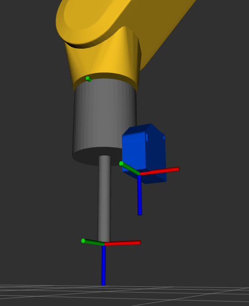
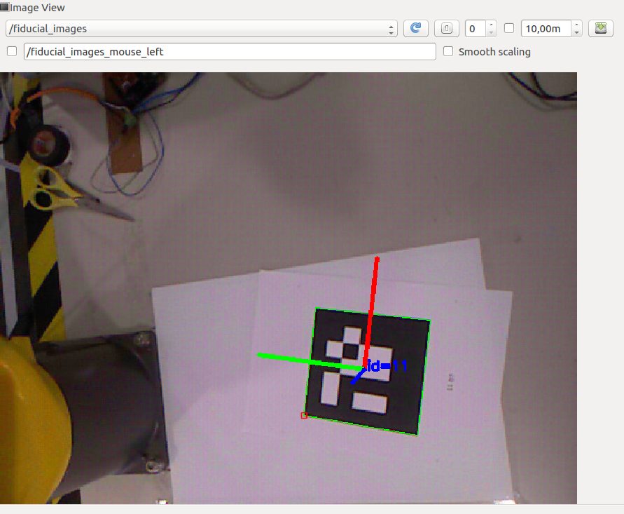

Until now I have been using a 220Ω resistor to convert the current signal to voltage, but since the Arduino UNO has an operating voltage of 5V I calculated the appropriate resistor to use the entire range, to do so I used the maximum current of the sensor(20mA).
\[R = {5V \over 0.02A} = 250Ω .\]
Knowing this, the circuit was changed to include a resistor of 250Ω .
Once again the entire process of gathering some analyses was redone and the next curve was acquired with the respective equation.
The Arduino UNO has analogue inputs of 10 bits which allows a resolution of 1024 values, and since the sensor was limited to a minimum of 100mm and a maximum of 500mm each value will represente a variation of 0.4mm. Having this in mind the new circuit was tested and the results where satisfactory once again. However, the readings did not improved because they continue to oscillate between two values with a diference of 0.57mm. For example when measuring 250mm with the sensor the Arduino readings changed between the values of 250.21mm and 250.78mm. This can be explained whit the fact that the sensor has a resolution analog output of 12 bits losing this way 2 bits when entering the Arduino.
CalibrationThe calibration of the laser sensor was carried on with the determination of the transformation from the coordinate system of the tip of the gripper to the coordinate system of the sender of the laser. The process of determining if the angle of the sensor changes with the perpendicular movement of the robot's end effector was redone with more precision. When moving the end effector 518.39mm the laser moved 5.5mm, this represents that the laser shifts 0.6 degrees when it moves from 64mm to 580mm in relation to the table. This offset is less than 1 degree so it's not going to be taken into account, at least for now. Afterwards the translation of the X,Y and Z was calculated. To calculate the exact diference from the tip of the gripper to the laser in the Z axis I gathered some readings from the laser when it is vertically pointing to the table, thus knowing the difference to the base of the robot. Then those where compared with the z-coordinate of the end effector read in the RVIZ. After gathering data for different distances the average was calculated, hence having a 63.6mm diference from the sender of the laser to the tip of the gripper. In order to calculate the translation in the X and Y directions the gripper was replaced by a pencil and the difference to the laser beam was evaluated.
In the picture below it is possible to see that there is a difference of 47.8mm and 16.6mm in the X and Y direction, respectively.
Having already the transformation the URDF was changed, by altering the binpicking_robot_macro.xacro file and adding the binpicking_gripper_macro.xacro, in order to incorporate the coordinate system of the sender of the laser sensor. The STL of the device was also included for a better visualization.

The calibration of the Kinect was my next step this week. To do so the visp_hand2eye_calibration ROS package was used. This package is used to estimate the camera position with respect to its effector (the robot arm) using the ViSP library. To compute the relative transformation between the the camera and the hand it is necessary to fed the calibrator node with the /world_effector and the /camera_object transformations. This last one is calculated using an aruco and the aruco_detect package which detects the pose of aruco markers, and this process can be visualized in the picture below.

To use this package it is necessary to install the fiducial software from binary packages using the following command.
sudo apt-get install ros-kinetic-fiducials
This calibration process is easily visualized in the scheme bellow.

For this calibration to work, the creation of a client, which feeds different transformations to the calibrator responsible for computing the relative transformation between the the camera and the hand from a few poses, is fundamental. The camera_calibration_client.py program, present in the calibration file, is responsible for executing this process and printing the /effector_camera transformation in the xyz(transformation) and rpy(rotation) format. With this it is possible to visualize the tree of the transformations of the entire system.
In order to visualize the robot, the Kinect, the laser sensor and all the associated coordinate systems, the URDF model of the entire system was changed, by altering the binpicking_macro.xacro file to incorporate the Kinect. All the components can be visualized and analysed live by running the next command.
roslaunch bin_picking global_state_visualize.launch

While using the RobComm language to send commands to move the robot, I observed that the origin in the base_link differs from the one visualized in RVIZ with the URDF of the FANUC robot. Besides the X and Y coordinate being almost the same, the Z-coordinate has a gap of 162.5mm. Hence, when moving the robot to a desired point I will have to take this aspect into consideration, when using the RobComm language.